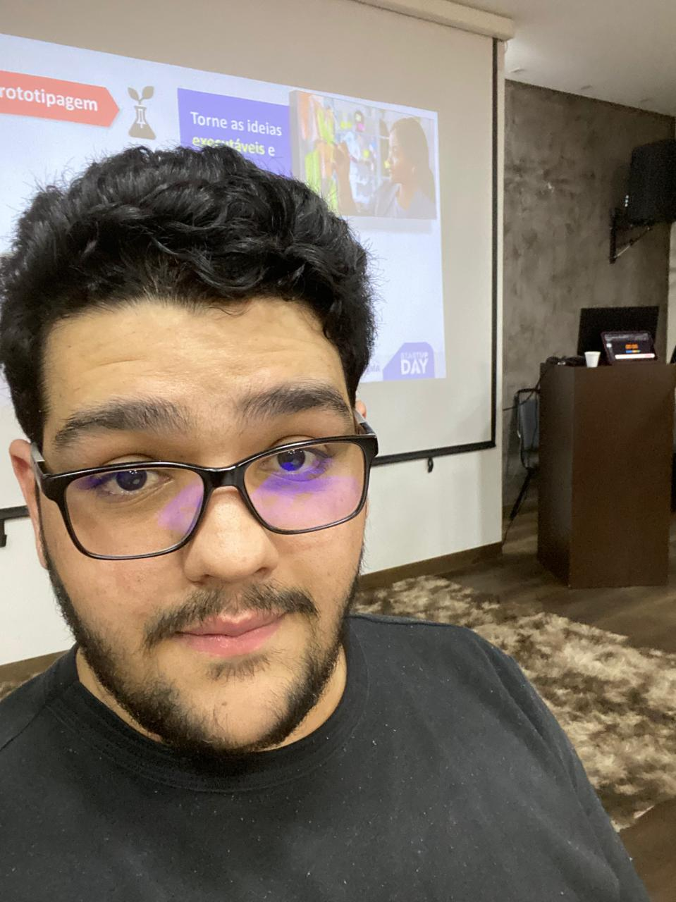
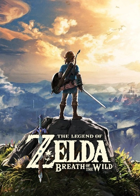
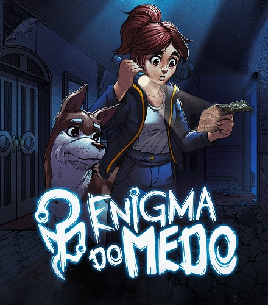
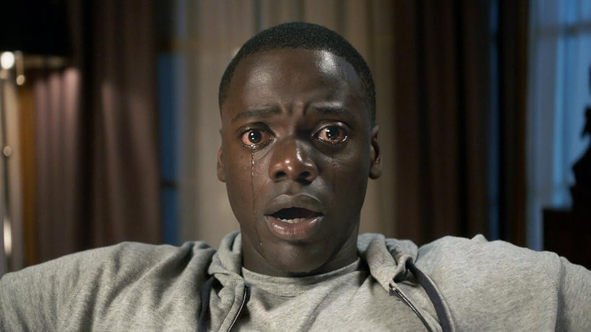
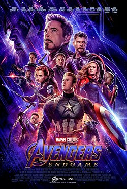
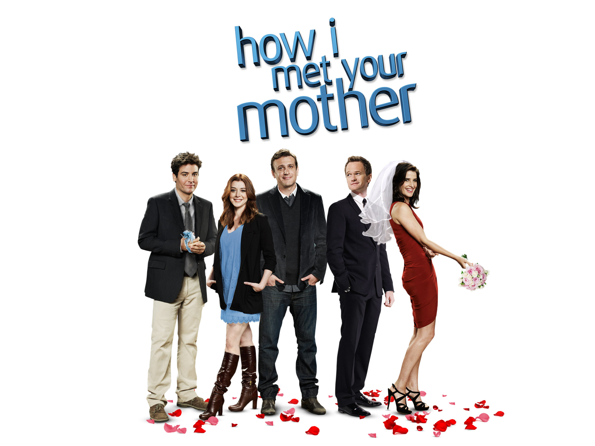
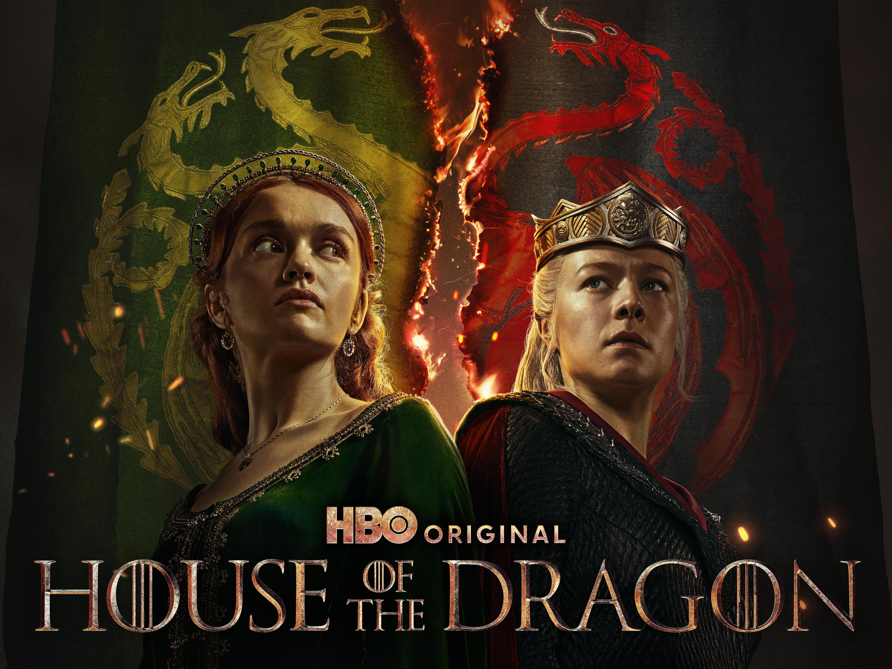

Olá, eu sou o Lucas Nobre!

Trajetória Acadêmica e Profissional
Sou estudante de Ciência da Computação na Universidade Federal de Roraima (UFRR), com grande interesse em compartilhar conhecimento através da extensão universitária. Atuei no projeto de ensino Macuxi Digital, voltado à inclusão tecnológica de jovens mulheres na computação, e atualmente participo do PRISM-RR Conecta, promovendo minicursos práticos que vão desde LaTeX até a criação de sistemas embarcados.
Hobbies e Interesses Pessoais
Jogos Favoritos





Músicas Favoritas


Filmes Favoritos





Séries Favoritas

